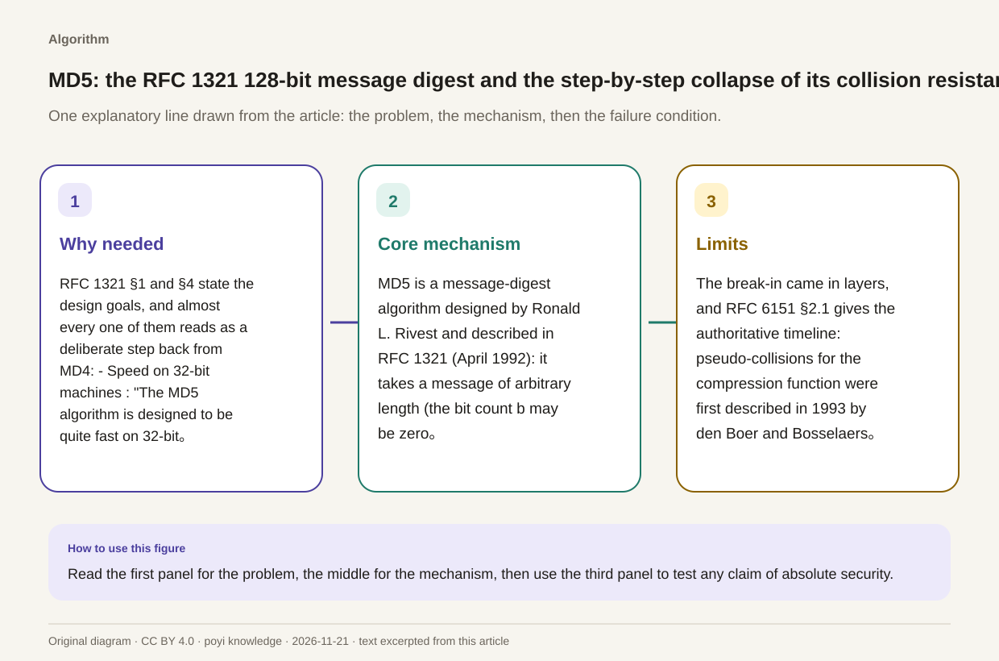
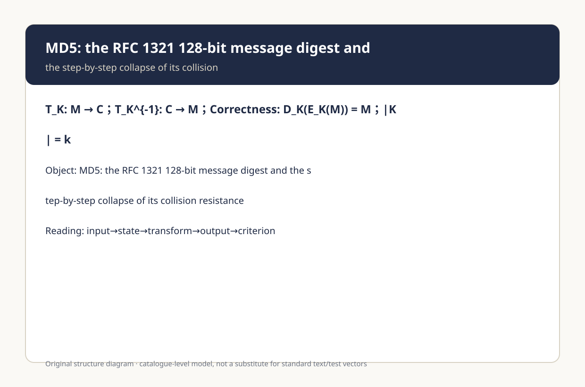

Principles
Algorithm: MD5 (MD5 散列). MD5 is a message-digest algorithm designed by Ronald L. Rivest and described in RFC 1321 (April 1992): it takes a message of arbitrary length (the bit count b may be zero, "need not be a multiple of eight, and" may be arbitrarily large) and produces a fixed 128-bit (16-byte) "fingerprint" or "message digest". RFC 1321 §1 states the conjecture directly: "it is computationally infeasible to produce two messages having the same message digest, or to produce any message having a given prespecified target message digest". The intended application is digital signatures, "where a large file must be" "compressed" "in a secure manner before being encrypted with a private" key in a public-key system such as RSA. The basic parameters: messages are processed in 512-bit blocks (sixteen 32-bit words); the state is four 32-bit registers A, B, C, D; the output is 128 bits. The notation of RFC 1321 §2 "Terminology and Notation" is identical to MD4's: a word means a 32-bit quantity and a byte an 8-bit one; byte strings map onto 32-bit words little-endian first, the text reading "a sequence of bytes can be interpreted as a sequence of 32-bit words, where each consecutive group of four bytes is interpreted as a word with the low-order (least significant) byte given first"; "+" is word addition, i.e. addition modulo 2^32; X <<< s is a 32-bit left rotation by s positions; not(X), X v Y, X xor Y and XY are bitwise NOT, OR, XOR and AND. The digest is computed in five steps (RFC 1321 §3):
- Append padding bits (§3.1): append a single "1" bit (an 0x80 byte in implementations), then "0" bits until the message length is "congruent to 448, modulo 512"; the memo puts the same fact as "the message is extended so that it is just 64 bits shy of being a multiple of 512 bits long". In all, "at least one bit and at most 512 bits are appended". Padding is always performed, even when the length is already congruent to 448. Append length (§3.2): append "A 64-bit representation of b (the length" before padding, as two 32-bit words with the low-order word first. If b exceeds 2^64, only its low-order 64 bits are used. The result "has a length that is an exact multiple of 512 bits", i.e. of 16-word blocks; call the words M[0..N-1]. Initialize the buffer (§3.3): the four 32-bit registers are initialized "in hexadecimal, low-order bytes first", to
- word A:
01 23 45 67(the word 0x67452301) - word B:
89 ab cd ef(the word 0xefcdab89) - word C:
fe dc ba 98(the word 0x98badcfe) - word D:
76 54 32 10(the word 0x10325476)
- word A:
This IV is word-for-word identical to MD4's and has the same hand-computation convenience: C = not(A) and D = not(B). Process the message in 16-word blocks (§3.4): each block undergoes 64 operations with one of four auxiliary functions, then the feed-forward addition. Each function takes three 32-bit words and returns one:
F(X,Y,Z) = XY v not(X) Z- a bitwise conditional select: take Y where X is 1, otherwise Z. RFC 1321 notes that "The function F could have been defined using + instead of v since XY and not(X)Z will never have 1's in the same bit position" - + can be used in place of v here, sinceXYandnot(X)Znever have a 1 in the same bit position. -G(X,Y,Z) = XZ v Y not(Z)- MD5 replaces MD4's majority function here; the reason is given under why it is designed this way. -H(X,Y,Z) = X xor Y xor Z- the bitwise parity function. -I(X,Y,Z) = Y xor (X v not(Z)). RFC 1321 says of F that "if the bits of X, Y, and Z are independent and unbiased, the each bit of F(X,Y,Z) will be independent and unbiased" - the memo's own line prints 'the' where 'then' is intended - and of G, H and I that "if the corresponding bits of X, Y, and Z are independent and unbiased, then each bit of G(X,Y,Z), H(X,Y,Z), and I(X,Y,Z) will be independent and unbiased". Step 4 "uses a 64-element table T[1 ... 64] constructed from the sine function";T[i]is the i-th entry of that table, "which is equal to the integer part of 4294967296 times abs(sin(i)), where i is in radians", and "The elements of the table are given in the appendix". The notation[abcd k s i]meansa = b + ((a + Φ(b,c,d) + X[k] + T[i]) <<< s), where Φ is the current round function. Note that the quantity inside the parentheses is what gets rotated, and register b is added after the rotation. Within each round the register roles cycle ABCD → DABC → CDAB → BCDA. The four rounds use these word orders, shift amounts and constant ranges:- Round 1 (F, T[1..16]): k = 0,1,…,15; s cycles (7, 12, 17, 22). - Round 2 (G, T[17..32]): k = 1,6,11,0,5,10,15,4,9,14,3,8,13,2,7,12; s cycles (5, 9, 14, 20). - Round 3 (H, T[33..48]): k = 5,8,11,14,1,4,7,10,13,0,3,6,9,12,15,2; s cycles (4, 11, 16, 23). - Round 4 (I, T[49..64]): k = 0,7,14,5,12,3,10,1,8,15,6,13,4,11,2,9; s cycles (6, 10, 15, 21). Before each block, A, B, C, D are saved as AA, BB, CC, DD; after the 64 operations the algorithm performs
A = A + AA,B = B + BB,C = C + CC,D = D + DD(the feed-forward addition). Output (§3.5): the digest is A, B, C, D, beginning with the low-order byte of A and ending with the high-order byte of D.

Why it matters
RFC 1321 §1 and §4 state the design goals, and almost every one of them reads as a deliberate step back from MD4:
- Speed on 32-bit machines: "The MD5 algorithm is designed to be quite fast on 32-bit machines", it "does not require any large substitution tables" and "can be coded quite compactly". Each 512-bit block costs 64 operations, each of which is a few mod-2^32 additions, one bitwise function and one rotation - all ordinary 32-bit instructions. - Backing off from MD4: RFC 1321 says plainly that MD5 is an extension of MD4, slightly slower but more "conservative" in design. The stated reason is that MD4 was felt to be "adopted for use more quickly than justified by the existing critical review", and that MD4, designed to be exceptionally fast, is "at the edge" "in terms of risking successful cryptanalytic attack". MD5 "backs off a bit, giving up a little in speed for a much greater likelihood of ultimate security", and it "incorporates some suggestions made by various reviewers, and contains additional optimizations". - Public domain: the MD5 algorithm itself is "being placed in the public domain for review and possible adoption as a standard". Note that the algorithm is what is placed in the public domain; the Appendix A reference code comes from RSAREF and still carries the RSA Data Security, Inc. copyright (1991-2) and licence notice. - Signature use: the goal is to compress a large file securely first, and only then encrypt the result with a private key "under a public-key cryptosystem such as RSA".
RFC 1321 §5 lists the six differences between MD4 and MD5, which is the most direct material for reading MD5's structure:
- A fourth round has been added (three rounds of 48 operations become four rounds of 64). 2. Each step now has a unique additive constant (MD4 had only two round constants). 3. "The function g in round 2 was changed from (XY v XZ v YZ) to (XZ v Y not(Z)) to make g less symmetric" - the first expression is the majority function. 4. "Each step now adds in the result of the previous step" - the post-rotation add, which “promotes a faster "avalanche effect"”. 5. "The order in which input words are accessed in rounds 2 and 3 is changed, to make these patterns less like each other."
- “The shift amounts in each round have been approximately optimized, to yield a faster "avalanche effect." The shifts in different rounds are distinct.”
Point 2 explains the 64-element sine table: MD5 needs 64 pairwise distinct constants, and RFC 1321 generates them from a public formula (the integer part of 4294967296 × abs(sin(i))) and lists them in the appendix. RFC 1321 gives no reason for choosing the sine function and does not tie these constants to any mathematical constant - unlike RFC 1320, which prints the sentence twice, once per constant - "This constant represents the square root of 2" and "This constant represents the square root of 3" - and gives each one's octal value.
RFC 1321 §4 conjectures that “coming up with two messages having the same…digest is on the order of 2^64 operations, and…coming up with any message having a given…digest is on the order of 2^128 operations”. The MD5 has been "carefully scrutinized for weaknesses" but is "a relatively new algorithm" for which further security analysis is justified. The original Security Considerations sentence reads: "The level of security discussed in this memo is considered to be sufficient for implementing very high security hybrid digital-signature schemes based on MD5 and a public-key cryptosystem". That section was later replaced wholesale by RFC 6151. (RFC 6151 "replaces" the RFC 1321 text and "updates" RFC 2104's, so the two relations are not the same.)
Applications
RFC 1321 §1 gives MD5's official identity: the object identifier
md5 OBJECT IDENTIFIER ::=
iso(1) member-body(2) US(840) rsadsi(113549) digestAlgorithm(2) 5}
(sic: the opening brace is missing in the RFC text)
that is, OID 1.2.840.113549.2.5, and it specifies that in the X.509 AlgorithmIdentifier type the parameters for MD5 should have type NULL.
RFC 3370 (R. Housley, August 2002, Standards Track, obsoleting RFC 2630 and RFC 3211) carries the same OID into the Cryptographic Message Syntax conventions: §2.2 says MD5's digest algorithm is the one defined in RFC 1321, that the parameters field of AlgorithmIdentifier MUST be present and MUST contain NULL, and that implementations MAY accept MD5 AlgorithmIdentifiers with parameters absent as well as NULL. §3.2 of the same document states: "CMS implementations that include the RSA (PKCS #1 v1.5) signature algorithm MUST also implement the SHA-1 message digest algorithm. Such implementations SHOULD also support the MD5 message digest algorithm."
RFC 8017 (PKCS #1 v2.2, November 2016, obsoleting RFC 3447) preserves MD5's identity and encoding in RSA signatures: the RSASSA-PKCS1-v1_5 OID table in Appendix A.2.4 contains md5WithRSAEncryption ::= {pkcs-1 4}, with the note "Note that if either MD2 or MD5 is used, then the OID is just as in PKCS #1 v1.5" (the OID value itself carries over unchanged from v1.5); the note in §9.2 gives the DER DigestInfo prefixes for EMSA-PKCS1-v1_5, and for MD5 it is
30 20 30 0c 06 08 2a 86 48 86 f7 0d 02 05 05 00 04 10 || H
That prefix is still recognisable as the byte-level marker of MD5 plus RSA in many signature implementations.
One of the few places MD5 is still routinely deployed is Windows NTLM v2 authentication. Microsoft's Open Specifications document MS-NLMP §3.3.2 defines the NT one-way function version 2:
Define NTOWFv2(Passwd, User, UserDom) as HMAC_MD5(
MD4(UNICODE(Passwd)),
UNICODE(ConcatenationOf( Uppercase(User), UserDom ) ) )
so MD5 appears inside NTLM v2's response key in the form HMAC-MD5, with the HMAC key being exactly the NTLM v1 “NTLM (NT) hash” (the MD4 digest of the password in UTF-16LE); LMOWFv2 is defined to be the same as NTOWFv2. The specification gives NTOWFv1("Password", "User", "Domain") = a4 f4 9c 40 65 10 bd ca b6 82 4e e7 c3 0f d8 52 in §4.2.2.1.2 and NTOWFv2("Password", "User", "Domain") = 0c 86 8a 40 3b fd 7a 93 a3 00 1e f2 2e f0 2e 3f in §4.2.4.1.1 - the latter can be recomputed by any standard HMAC-MD5 implementation, and this batch's vectors.json keeps it as an external cross-check vector.
The same specification also uses HMAC-MD5 for the NTLM session-security message integrity code: the pseudocode in §3.1.5.1.2 reads Set MIC to HMAC_MD5(ExportedSessionKey, ConcatenationOf(NEGOTIATE_MESSAGE, CHALLENGE_MESSAGE, AUTHENTICATE_MESSAGE)), and the §5.2 "Index of Security Parameters" points "MD4/MD5 usage in NTLM v1" to §3.3.1, "MD4/MD5 usage in NTLM v2" to §3.3.2 and "MD5/RC4 usage during session security" to §3.4. The current revision of that document is 37.0, released March 30, 2026.
RFC 6151 (March 2011) separates MD5's different uses: "Where the MD5 checksum is used inline with the protocol solely to protect against errors, an MD5 checksum is still an acceptable use." but any application or protocol that uses MD5 for any purpose must spell out in its own security considerations which services it actually expects from MD5. The same document says "It is not urgent to stop using" HMAC-MD5, but since MD5 must not be used where collision resistance is required, "new protocol designs should not employ HMAC-MD5"; the listed alternatives are HMAC-SHA256 and, where AES is more readily available than a hash function, AES-CMAC.
To be explicit: everywhere collision resistance is required - digital signatures, certificates, code signing - MD5 is unusable. Its presence in NTLM is legacy protocol compatibility.

Limits & attacks
The break-in came in layers, and RFC 6151 §2.1 gives the authoritative timeline: pseudo-collisions for the compression function were first described in 1993 by den Boer and Bosselaers; in 1996 Dobbertin "demonstrated a collision pair for the MD5 compression function with a chosen initial value"; two collision pairs for MD5 were first published in 2004 by Wang, Feng, Lai and Yu; and the detailed attack techniques appeared at EUROCRYPT 2005 from Wang and Yu.
The key innovation of Wang and Yu (EUROCRYPT 2005, LNCS 3494, pp. 19-35) is the modular differential: unlike classical differential cryptanalysis of block ciphers, which measures differences with XOR, the attack defines the difference as modular integer subtraction modulo 2^32, ΔX = X' − X. The abstract says "The attack is a differential attack, which unlike most differential attacks, does not use the exclusive-or as a measure of difference, but instead uses modular integer subtraction as the measure." - the paper calls this kind of difference a modular differential.
The attack finds two messages (M0, M1) and (M0', M1') of two 512-bit blocks each: starting from MD5's standard IV, the first blocks produce different chaining values (a,b,c,d) and (a',b',c',d'), and the second blocks then collide. The paper's complexities are about 2^39 MD5 operations to find the first-block pair (M0, M0') and about 2^32 MD5 operations to find the second-block pair (M1, M1'). On probabilities: single-message modification alone leaves the first-iteration difference standing at 2^-43 and the second at 2^-37; once multi-message modification leaves 37 of the round 2-4 conditions undetermined, those two rise to 2^-37 and 2^-30 respectively. The paper's measurements: on an IBM P690, finding M0 and M0' takes about an hour, in the fastest cases only 15 minutes, and then finding the second blocks takes only between 15 seconds and 5 minutes.
Before MD5 was fully broken, the best known result was a semi free-start collision: the abstract states that "The best known result so far was a semi free-start collision, in which the initial value of the hash function is replaced by a non-standard value, which is the result of the attack". Wang and Yu §1 recall both steps: the 1993 pseudo-collision of den Boer and Bosselaers "consists of the same message with two different sets of initial values", and the paper says it "discloses the weak avalanche in the most significant bit" of every MD5 chaining variable; at the Eurocrypt'96 rump session Dobbertin "presented a semi free-start collision which consists of two different 512-bit messages with a chosen initial value" - a0 = 0x12ac2375, b0 = 0x3b341042, c0 = 0x5f62b97c, d0 = 0x4ba763ed. Dobbertin could not provide a real collision, but the paper says his attack "reveals the weak avalanche for the full MD5", and its next sentence reads "This provides a possibility to find a special differential with one iteration".
The practical cost of collisions kept falling. RFC 6151 §2.1 records that Klima's attack (ePrint 2006/105) "can find MD5 collision in about one minute on a standard notebook PC (Intel Pentium, 1.6GHz)", and that Stevens's master's thesis "claims that it takes 10 seconds or less on a 2.6Ghz Pentium4 to find collisions" - that is how the RFC prints this particular clock unit. The earlier RFC 4270 (November 2005) had already written that "The attacks against MD5 are practical on any modern computer", citing Klima's then-current "eight hours on a 1.6-GHz computer".
Collisions were then turned into certificate attacks. RFC 6151 §2.1 lists the chosen-prefix work of Stevens, Lenstra and de Weger and its application to X.509 certificates, and cites [SSALMOdeW2009] - the CRYPTO 2009 paper by Stevens, Sotirov, Appelbaum, Lenstra, Molnar, Osvik and de Weger; RFC 6151 §4 prints that reference entry as "Short chosen-prefix collisions for MD5 and the creation of a rogue CA certificate". The same section notes that "the collision attack on MD5 can also be applied to password-based challenge-and-response authentication protocols such as the APOP" - the authentication option in POP that Leurent's FSE 2007 paper attacks.
What was broken is collision resistance, not every property:
- Pre-image and second pre-image: RFC 6151 §2.2 notes that although the best result (Sasaki and Aoki, EUROCRYPT 2009) is faster than exhaustive search, its complexity of "2^123.4 is still pretty high". RFC 4270 §2.1 likewise stresses that "All the currently known practical or almost-practical attacks on MD5 and SHA-1 are collision attacks", and adds that "significant first- and second-preimage attacks" "would be much more devastating in the real world than collision attacks". - HMAC-MD5: RFC 6151 §2.3 reviews three results. Contini and Yin (ASIACRYPT 2006) used related keys for a partial key-recovery attack on NMAC-MD5, which cannot be extended to HMAC-MD5 because, in the memo's own words, "for HMAC, recovering partial secret IVs can hardly lead to recovering (partial) key K". Fouque, Leurent and Nguyen (CRYPTO 2007) extended this to a full key-recovery attack on NMAC-MD5, again a related-key attack that does not seem applicable to HMAC-MD5. Wang, Yu, Wang, Zhang and Zhan (EUROCRYPT 2009) gave a distinguishing attack without related keys that distinguishes an instantiation of HMAC with MD5 from one with a random function using "2^97 queries with probability 0.87"; the memo records that "it cannot be used to recover the (partial) inner key H(K Xor ipad)", and adds that no route from it to a forgery is obvious. RFC 6151's conclusion is that "The attacks on HMAC-MD5 do not seem to indicate a practical vulnerability when used as a message authentication code".
History
- April 1992: RFC 1321, "The MD5 Message-Digest Algorithm", by Ronald L. Rivest (MIT Laboratory for Computer Science and RSA Data Security, Inc.). The status section reads: "This memo provides information for the Internet community. It does not specify an Internet standard." The acknowledgements thank Don Coppersmith, Burt Kaliski, Ralph Merkle, David Chaum and Noam Nisan. There are only three references: RFC 1320, the MD4 CRYPTO '90 paper (pp. 303-311, Springer-Verlag, 1991) and CCITT Recommendation X.509 (1988). The Appendix A reference implementation is taken from RSAREF. - 1993: den Boer and Bosselaers publish the MD5 compression-function pseudo-collision (same message, two sets of initial values) at EUROCRYPT '93. - 1996: Dobbertin reports the semi free-start collision for the MD5 compression function at the rump session of Eurocrypt 1996; a general description appears in CryptoBytes 2(2). - August 2004: Wang, Feng, Lai and Yu submit "Collisions for Hash Functions MD4, MD5, HAVAL-128 and RIPEMD" as IACR ePrint 2004/199 (received 2004-08-16, last of two revisions 2004-08-17) and announce it at the CRYPTO 2004 rump session. Wang and Yu's EUROCRYPT 2005 paper §1 states that "Two such collisions of MD5 were made public in the Crypto’04 rump session". - 2005: Wang and Yu (Shandong University) publish "How to Break MD5 and Other Hash Functions" at EUROCRYPT 2005 (R. Cramer, ed., LNCS 3494, pp. 19-35), giving the modular differential, the message-modification techniques and the full two-block collision construction. The acknowledgements credit conversations with Dengguo Feng for leading to this research on MD5, and thank Eli Biham, Andrew C. Yao, Yiqun Lisa Yin, Xuejia Lai, Hans Dobbertin and Magnus Daum. In the same year Klima published his notebook-scale MD5 collision method (cited by RFC 4270 as "eight hours on a 1.6-GHz computer"), and Lenstra and de Weger discussed "constructing meaningful hash collisions for public keys" (also cited by RFC 4270). - November 2005: RFC 4270, "Attacks on Cryptographic Hashes in Internet Protocols" (P. Hoffman, VPN Consortium; B. Schneier, Counterpane Internet Security), summarizes how the hash attacks do and do not affect Internet protocols and argues that "The Internet protocol community needs to migrate in an orderly manner away from SHA-1 and MD5 -- especially MD5 -- and toward more secure hash algorithms."
- March 2011: RFC 6151, "Updated Security Considerations for the MD5 Message-Digest and the HMAC-MD5 Algorithms" (S. Turner, IECA; L. Chen, NIST), header marked
Updates: 1321, 2104, replacing the security considerations of RFC 1321 and updating those of RFC 2104. - November 2016: RFC 8017 (the IETF republication of RSA Laboratories' PKCS #1 v2.2, obsoleting RFC 3447) keepsmd5WithRSAEncryptionwhile its reference list records Stevens, Lenstra and de Weger's chosen-prefix collisions for MD5 and applications.
Genealogically, MD5 shares one skeleton with MD4: Merkle-Damgård iteration, 512-bit blocks, a 128-bit state, a family of bitwise functions with word-level mixing, feed-forward and little-endian output. Wang and Yu's paper applies the same technique to MD4, HAVAL-128, RIPEMD and SHA-0; the abstract says "This attack is also applicable to other hash functions, such as RIPEMD and HAVAL.", and §5 gives the complexities as MD4 about 2^23 (about 2^8 with multi-message modification), HAVAL-128 about 2^13 (2^7), RIPEMD about 2^30 (2^18) and SHA-0 about 2^61 (2^45).
Worked example & verification
Worked example
Take one published or standard test vector, record the input, the ordered steps and the byte-exact output, then compare with an independent implementation. Where no citable numeric vector is available, the entry records only structural steps and does not invent an output.
References
- Wikipedia search entry for MD5 散列. https://zh.wikipedia.org/w/index.php?search=MD5%20%E6%95%A3%E5%88%97
- Handbook of Applied Cryptography (Menezes, van Oorschot, Vanstone). https://www.cacr.math.uwaterloo.ca/hac/